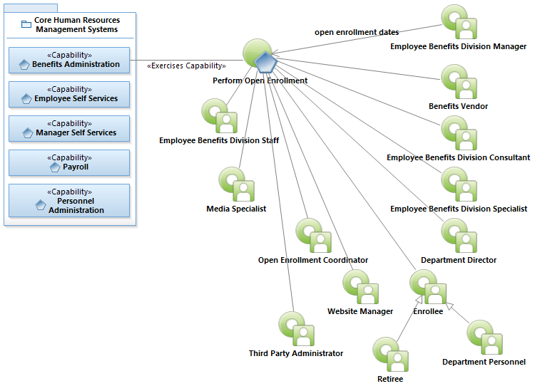
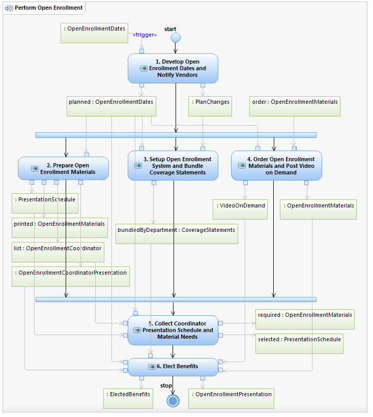

Use Case Model: Perform Open Enrollment
Architect: Rob Byrd, Chief Enterprise IT Architect
Date Last Modified: 05/14/2012
User Review: Andrea Glasper, Benefits Specialist
Date: 04/27/2012
Prepares and executes a five-week enrollment period that allows employees and retirees to make benefit changes without a qualifying event. This would include adding and dropping dependents to coverage, changing or adding medical, dental, vision, life, disability, legal coverage.
Follow link to Role Definitions

Use Case Model: Perform Open Enrollment

Interaction Overview: Perform Open Enrollment Elections
Activity Documentation
| Activity | Documentation |
|---|---|
| 1. Develop Open Enrollment Dates and Notify Vendors | The Employee Benefits Division Consultant establishes planned open enrollment dates and notifies the Benefits Vendors. The Benefits Vendors begin preparing open enrollment materials. |
| 2. Prepare Open Enrollment Materials | Based on planned open enrollment dates, the Employee Benefits Division Staff perform the open enrollment project to include reviewing guides for changes and developing the open enrollment coordinator presentation to train department coordinators. The Department Directors appoint primary and alternate coordinators and the Employee Benefits Division Consultant develops the presentation schedule and updates and prints open enrollment materials. |
| 3. Setup Open Enrollment System and Bundle Coverage Statements | Based on planned open enrollment dates, the Third Party Administrator (outsourced open enrollment vendor) updates the online enrollment system (Web based) and sets up the telephone system where benefits can be elected using an automated telephone system. The Third Party Associate generates coverage statements for all city employees and retirees that are sent to the Employee Benefits Specialist who bundles them by departments and mails coverage statements to retirees. |
| 4. Order Open Enrollment Materials and Post Video on Demand | The Employee Benefits Division Consultant orders open enrollment materials and the Benefits Vendors prepare videos that explain the various benefits (video on demand). The Media Specialist post the video on demand files for access on the Channel 6 Website for employee and retiree review. |
| 5. Collect Coordinator Presentation Schedule and Material Needs | The CTM Website Manager ensures the Coordinator Website is setup and tested. Once successfully tested, the Employee Benefits Division Consultant enters the presentation schedule and requests the Website to be opened for Open Enrollment Coordinator access. For each department, the Open Enrollment Coordinator logs-in and enters department presentation schedule and enters open enrollment material needs. Once complete based on the open enrollment planned schedule, the CTM Website Manager closes the coordinator Website. |
| 6. Elect Benefits | Both the Employee Benefits Division Consultant and the Benefits Vendors prepare their corresponding open enrollment presentations. The Employee Benefits Division Consultant conducts open enrollment coordinator training. On completion, the Open Enrollment Coordinator picks up coverage statements and delivers to department personnel. The open enrollment presentation is delivered and employees and retirees elect their desired benefits. The Employee Benefits Division Consultant if required provides additional assistance for retirees. |
Note: When the activity is self explanatory no documentation is provided.